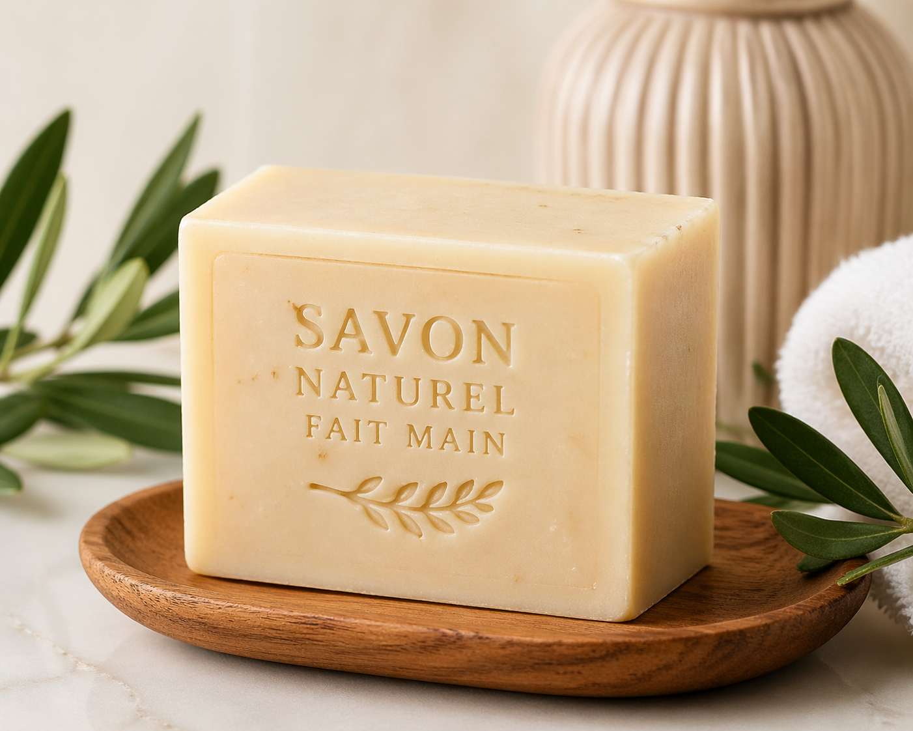

Un soin d'exception inspiré des rituels de beauté ancestraux. Formulé avec des huiles rares pour sublimer chaque type de peau.

Une forme sculptée à la main, gravée du monogramme S·U. Chaque savon est une pièce unique, façonnée avec soin par nos artisans.
ArtisanatEnrichi en beurre de karité, huile d'argan et extrait de rose de Damas. Une synergie d'actifs qui nourrit, hydrate et protège en profondeur.
PremiumUn parfum délicat de fleurs blanches et de bois de santal qui éveille les sens. Chaque utilisation devient un moment de pur plaisir.
Bien-êtreSavon Unique est né d'une conviction profonde : le soin quotidien mérite d'être un moment de luxe accessible. Inspirés par les hammams orientaux et les thermes romains, nos savonniers ont élaboré une formule d'exception.
Chaque barre est coulée à la main dans nos ateliers en Provence, séchée pendant six semaines pour atteindre la perfection, puis gravée et emballée avec le plus grand soin dans un papier japonais recyclé.
"Je cherchais un savon de luxe pour me l'offrir et je suis tombée sur Savon Unique. L'odeur est envoûtante, la mousse crémeuse et ma peau n'a jamais été aussi douce. Un coup de cœur absolu !"
"En tant que dermatologue, je suis très sélectif sur les produits que je recommande. Savon Unique répond à des critères stricts : formule douce, pH équilibré, ingrédients nobles. Je le prescris sans hésitation."
"Le packaging est magnifique, le parfum reste subtilement sur la peau toute la journée. C'est devenu mon rituel du matin. Je ne peux plus m'en passer depuis 8 mois !"